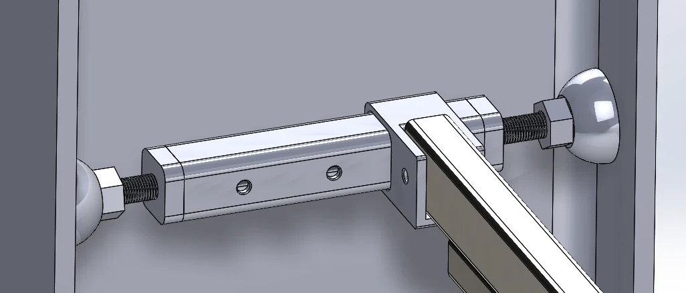
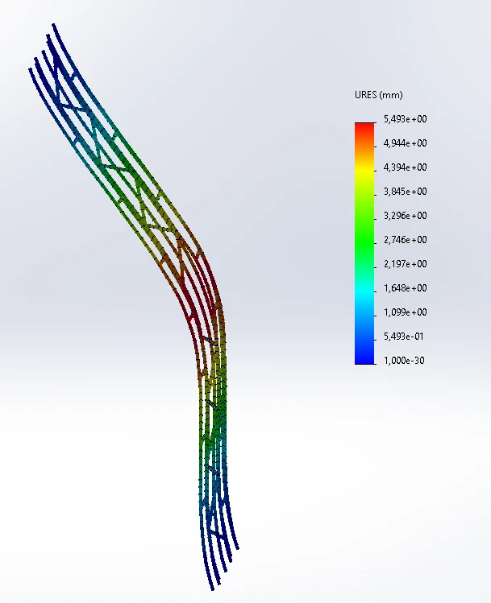
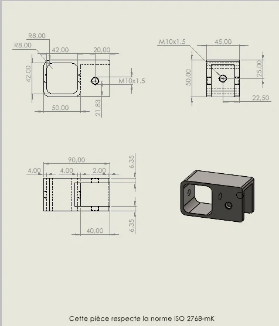

Design challenge
Design a wall-mounted display system for a Formula Student race car in the ENIM workshop. The car needed to be supported horizontally while avoiding drilling into the existing structural columns and avoiding modification of the vehicle. The column arrangement included outward-leaning I-sections, which ruled out conventional direct brackets.
Proposed concept
We developed internal clamping elements that grip the cavity of the I-sections. Threaded rods apply pressure to the flanges, while the clamp assembly connects to a tubular support frame and mounting plates. The concept addresses the installation constraint through a reversible mechanical interface.

CAD and structural assessment
My contribution focused on CAD design and finite-element simulation, including structural optimisation within the three-person team. The SolidWorks analysis helped assess deformation patterns in the tubular frame as part of the design iteration. A material-selection comparison was made between AISI 304 and AISI 1045 steel to account for structural performance, mass and material cost.


What this project demonstrates
- Turning installation restrictions into a mechanical concept.
- Designing assemblies and bespoke interfaces in SolidWorks.
- Using FEA results to support structural design iteration.
- Considering material selection and production constraints.
This page documents the team design and available CAD/FEA visuals. The screenshot does not independently establish a certified load capacity or indicate that the assembly was installed in service. This display fixture is not the author's separate Electric Formula SAE vehicle design experience.